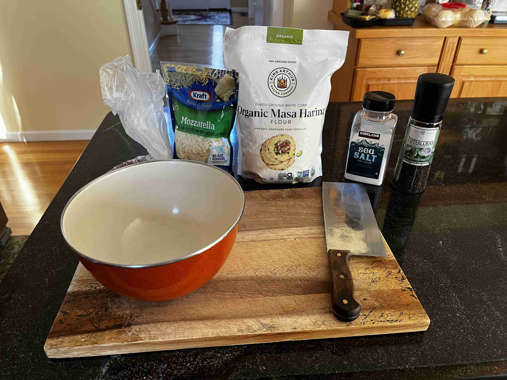
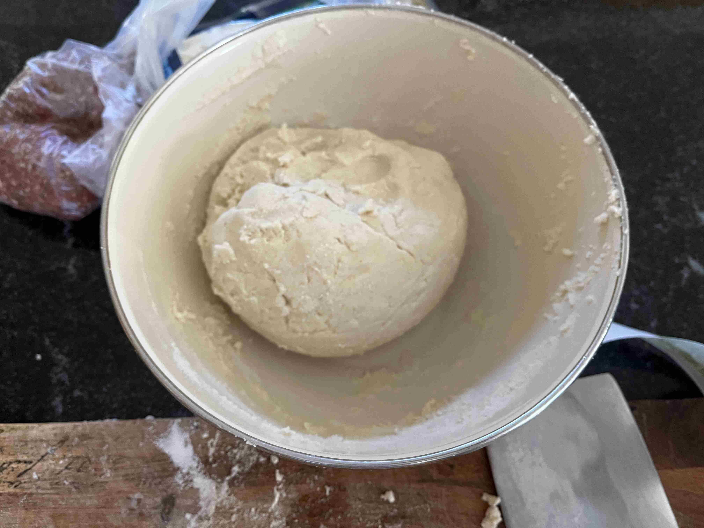
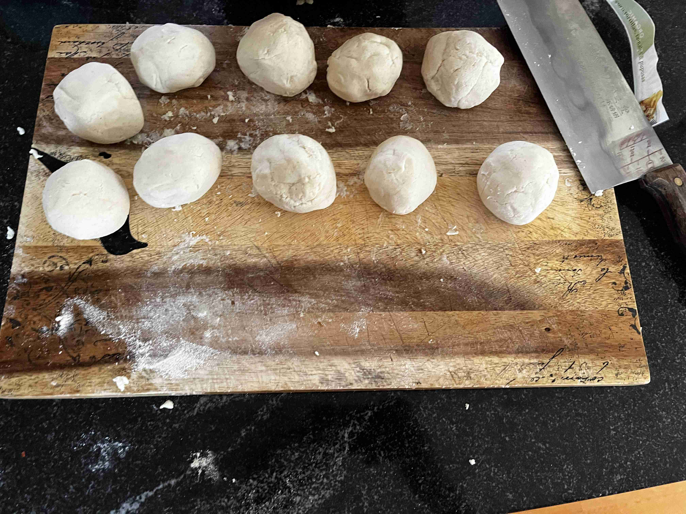
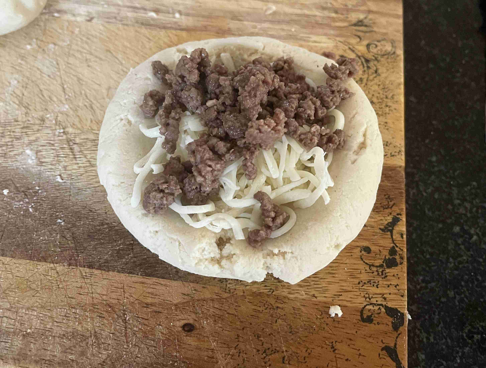
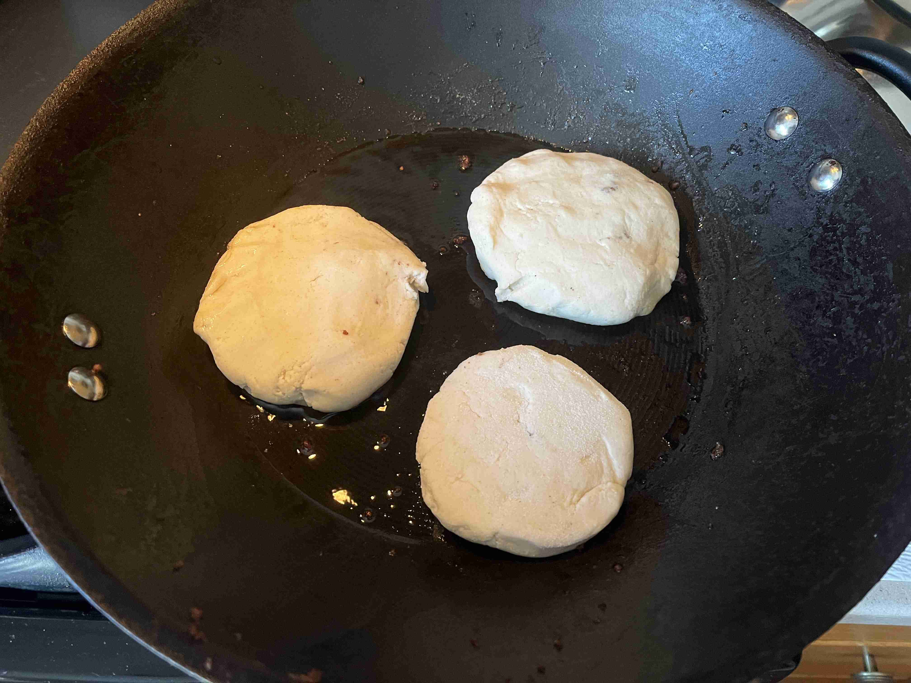
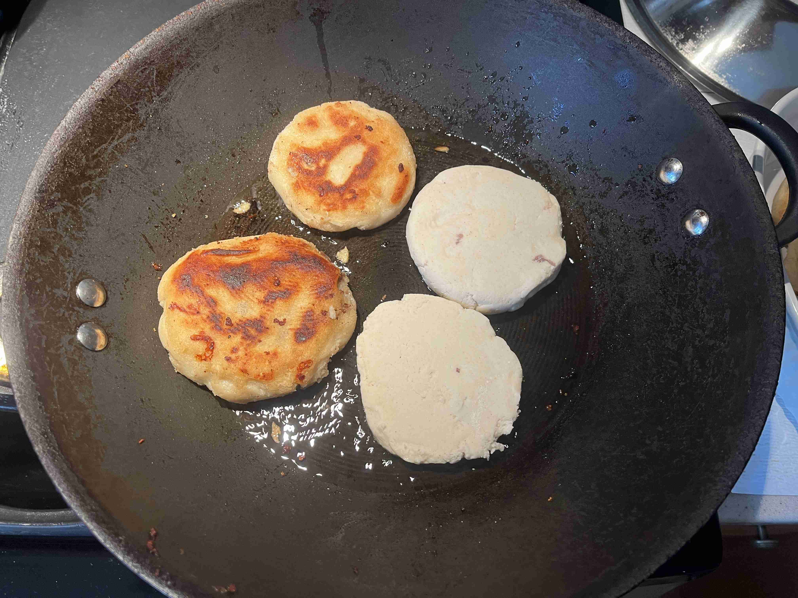

Pupusa (El Salvador)
-
 12 servings
12 servings
-
 1.5
hours
1.5
hours
-
 The Foreign Fork
The Foreign Fork
-
 Meat
Meat
-
 Salty
Salty
Cooked on November 24, 2023.
My eighteenth recipe! Pupusa is a traditional El Salvadorian dish that is a thick corn tortilla stuffed with cheese, beans, and/or meat. I made this dish for Thanksgiving it was a great experience! The dough was very easy to make and the filling was very flavorful. The pupusas were very filling and were a great addition to the Thanksgiving table.
Rating 7/10, it was good but not too flavorful. I would’ve used some more Central American seasoning on the ground beef and the masa harina flour to enhance the flavor. I would also use a different cheese next time, maybe a queso fresco or a cotija cheese.
Special equipment: Large skillet (or wok)
Cooking
1 lblean ground beef (season with onion/garlic powder, salt, pepper, and any other seasoning you wish)6 cupsmasa harina5.5 cupswater8 tbspfine grain sea salt3 cupsshredded mozarrella cheese or mexican cheese blend1/2 cupvegetable oil (for cooking)


Mix in salt and flour in a large mixing bowl with a fork. Add water and mix with hands until dough forms. Knead dough for 5 minutes.
Once the dough becomes like a dry playdough, cover with a damp towel and let rest for 10 minutes.
Cook ground beef in a skillet until brown. Season with salt, pepper, and any other seasoning as you wish.
Split the dough into around 15 2-inch balls. Make a well in each and fill with 1 tbsp of cheese and 1 tbsp of ground beef. Close the dough around the filling and flatten into a 1/4 inch thick disk.


Heat oil in a large skillet. In batches, cook the pupusas for 5-6 minutes on each side, or until a darker brown. Serve with salsa. Enjoy!


Reflecting on this recipe, as I went through the cooking process, I gradually made the Pupusa’s flatter as I went on as the thicker ones weren’t well cooked inside. So, I would recommend making the balls as round as possible then flatten it as flat as possible. Then, you can patch up any weak points. Lastly, I think a better mexican blend or specialty cheeses would have enhanced the flavor and using beef birria would have been a great addition to the pupusa as a dip or for the filling.